CODING AGENTS AS PIXEL WORLD MODELS
traex/GPT-6.1-Sol · common50_0036
点击播放 · 原生 RGB 像素
逐轮保存的候选
回放视频、检查图与代码变化。
每份候选均可单独播放。实际图片检查记录在下方工具轨迹中。
候选 01播放与检查图
点击播放 · 原生 RGB 像素
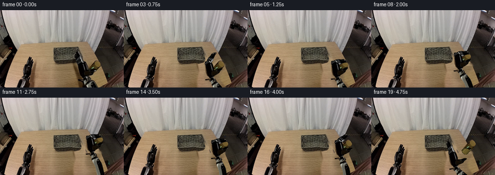
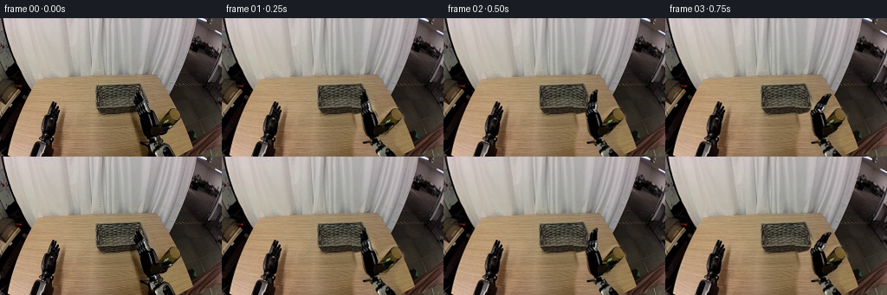
展开代码变化
--- 上一保存版本
+++ 本次保存版本
@@ -0,0 +1,206 @@
+from pathlib import Path
+import math
+import numpy as np
+from PIL import Image, ImageDraw, ImageFilter
+import artifact_io
+
+ROOT = Path(__file__).resolve().parent
+W,H=256,160
+S=4
+original=Image.open(ROOT/'first_frame.png').convert('RGB')
+source=np.asarray(original).copy()
+
+
+def polygon_mask(points, size=(W,H), soft=.18):
+ im=Image.new('L',(size[0]*S,size[1]*S),0)
+ ImageDraw.Draw(im).polygon([(round(x*S),round(y*S)) for x,y in points],fill=255)
+ if soft: im=im.filter(ImageFilter.GaussianBlur(soft*S))
+ return im
+
+# Geometry labels are constructed here from the supplied RGB photograph only.
+# Recover the table's stationary grain from neighboring unobstructed wood.
+yy,xx=np.mgrid[:H,:W]
+wood=source.copy()
+for y in range(75,H):
+ for x in range(146,221):
+ sx=x-67
+ if y<115 and sx>106: sx-=24
+ wood[y,x]=source[y,sx]
+remove=[(155,81),(161,81),(166,91),(176,101),(179,115),(195,103),
+ (202,102),(209,108),(210,117),(199,134),(199,143),(209,157),
+ (211,160),(152,160),(152,145),(155,127),(153,111),(151,95)]
+rem=polygon_mask(remove,soft=1.4).resize((W,H),Image.Resampling.LANCZOS)
+bg=Image.composite(Image.fromarray(wood),original,rem)
+# Rebuild the narrow basket edge hidden by the initial open right fingers.
+bask=np.asarray(bg).copy()
+for y in range(77,113):
+ for x in range(149,173):
+ # mirrored edge follows the original trapezoidal perspective
+ sx=int(round(278-x+(y-91)*.08))
+ sx=max(108,min(137,sx))
+ bask[y,x]=source[y,sx]
+basket_mask=polygon_mask([(149,79),(162,77.5),(164,83),(166,90),(169,101),(167,108),(154,111),(150,108)],soft=.35).resize((W,H),Image.Resampling.LANCZOS)
+bg=Image.composite(Image.fromarray(bask),bg,basket_mask)
+
+# Preserve exact photographed textures on the rigid palm and metal jaws.
+palm_poly=[(160,106),(169,104.5),(173,106.5),(176,112),(179,121),
+ (178,125),(182,129),(181,134),(177.5,139),(182,141),
+ (185,145),(181,149),(175,149),(170,146),(169,144),
+ (162,145),(161,143),(169,141),(170,139),(165,135),
+ (162,128),(160.5,119),(159,112)]
+finger_poly=[(155.5,87),(157.7,83),(159.5,82.5),(160.9,86.5),
+ (162.5,89.5),(164.7,93.4),(166.2,95.2),(167.7,96.5),
+ (170.3,102.6),(172.2,105.6),(170.7,109.3),
+ (163.4,111),(159.5,106.3),(157.7,101.5),(157.2,97),
+ (155.2,93)]
+thumb_poly=[(173.1,125.6),(178,123.7),(182.4,123.8),(187.7,122.4),
+ (191.7,121),(196,120.7),(197.7,122.3),(195.5,125.3),
+ (192.5,126.7),(190.6,130),(186.5,132.4),(181.5,134.5),
+ (175,133.6),(173,131)]
+
+def sprite(poly):
+ im=original.resize((W*S,H*S),Image.Resampling.LANCZOS).convert('RGBA')
+ im.putalpha(polygon_mask(poly))
+ return im
+palm=sprite(palm_poly)
+fingers=sprite(finger_poly)
+thumb=sprite(thumb_poly)
+
+# Complete only the hidden portion of the cylinder, keeping all visible
+# amber surface, rim and specular reflections from the given image.
+glass_arr=source.copy()
+base=np.array([185.0,129.0]); top=np.array([201.0,111.0]); axis=top-base
+perp=np.array([.747,.664])
+for y in range(118,137):
+ for x in range(175,201):
+ t=np.dot(np.array([x,y])-base,axis)/np.dot(axis,axis)
+ u=np.dot(np.array([x,y])-base,perp)
+ if -.15<t<.65 and abs(u)<7:
+ shade=np.clip(.55+.38*(1-(u/7)**2),.35,1)
+ val=np.array([113,97,43])*shade
+ # a subtle, stable highlight on the brown transparent wall
+ val += np.array([26,28,20])*math.exp(-((u+3.3)/1.0)**2)
+ glass_arr[y,x]=np.clip(val,0,255)
+glass_poly=[(195.4,106),(198.4,103.9),(201.7,104.1),(205.3,107.2),
+ (208,111.5),(207.8,115.3),(205.7,118.1),(191.6,133.4),
+ (188.4,135),(184.3,134),(180,130.5),(178.4,126.2)]
+visible=[(195.2,106.1),(198.4,104),(201.6,104),(205.3,107.2),
+ (208,111.5),(207.8,115.2),(205.5,118.1),(196,125.4),
+ (192,122.7),(187.5,122.3),(184,122),(181.8,121.5)]
+v=np.asarray(polygon_mask(visible,soft=.15).resize((W,H),Image.Resampling.LANCZOS))/255.
+glass_arr=(glass_arr*(1-v[...,None])+source*v[...,None]).astype(np.uint8)
+glass=Image.fromarray(glass_arr).resize((W*S,H*S),Image.Resampling.LANCZOS).convert('RGBA')
+glass.putalpha(polygon_mask(glass_poly,soft=.2))
+
+# A rigid photographed forearm. Its nonvisible continuation has matching
+# metal cross-section; two constant-length links are solved analytically.
+wrist=np.array([179.,143.])
+elbow0=wrist+np.array([28.,41.])/np.linalg.norm([28.,41.])*50
+shoulder=np.array([246.,180.])
+L1=50.; L2=np.linalg.norm(elbow0-shoulder)
+fore=np.zeros((214,W,3),dtype=np.uint8)
+fore[:H]=source
+vaxis=(elbow0-wrist)/L1
+nv=np.array([-vaxis[1],vaxis[0]])
+for y in range(H,214):
+ for x in range(150,238):
+ q=np.array([x,y])-wrist
+ u=float(q@nv)
+ # actual sample across the visible lower casing (at y=155)
+ p=wrist+vaxis*16+nv*u
+ sx=int(np.clip(round(p[0]),0,W-1));sy=int(np.clip(round(p[1]),148,159))
+ fore[y,x]=source[sy,sx]
+fore_poly=[(176.3,145.1),(181.1,143.5),(187.2,146.4),(191.4,150),
+ (199.5,156.8),(205,166),(214.7,184.1),(210.7,190),
+ (202.5,189.5),(197.2,182.8),(188.6,167),(177,155.5),(175,150)]
+forearm=Image.fromarray(fore).resize((W*S,214*S),Image.Resampling.LANCZOS).convert('RGBA')
+forearm.putalpha(polygon_mask(fore_poly,size=(W,214),soft=.17))
+
+def rotation(angle):
+ a=math.radians(angle); return np.array([[math.cos(a),-math.sin(a)],[math.sin(a),math.cos(a)]])
+
+def joint_matrix(pivot,angle):
+ R=rotation(angle);p=np.array(pivot);return R,p-R@p
+
+def transformed(im,R,b):
+ inv=np.linalg.inv(R);c=-inv@b*S
+ coeff=(inv[0,0],inv[0,1],c[0],inv[1,0],inv[1,1],c[1])
+ return im.transform((W*S,H*S),Image.Transform.AFFINE,coeff,Image.Resampling.BICUBIC)
+
+def compose(R,b,R2,b2):return R@R2,R@b2+b
+
+def elbow_for(w):
+ dvec=shoulder-w;dist=np.linalg.norm(dvec);e=dvec/dist
+ a=(L1*L1-L2*L2+dist*dist)/(2*dist)
+ h=math.sqrt(max(0,L1*L1-a*a))
+ return w+a*e+h*np.array([-e[1],e[0]])
+
+# Each keyframe is (wrist translation x/y, palm rotation, jaw flex, thumb flex,
+# cylinder translation x/y). The cylinder only moves while pinched.
+keys=[
+(0,0,0,0,0,0,0),
+(1.4,0,0,10,-2,0,0),
+(4,0.4,1,29,-5,0,0),
+(7,0.7,2,53,-8,0,0),
+(10,0.3,3,78,-11,0,0),
+(11,0,4,101,-13,0,0),
+(11,-4,4,101,-13,0,-4),
+(10,-10,4,101,-13,-1,-10),
+(9,-17,4,101,-13,-2,-17),
+(10,-22,4,101,-13,-1,-22),
+(13,-25,4,101,-13,2,-25),
+(16,-26,4,101,-13,5,-26),
+(18,-24,4,101,-13,7,-24),
+(19,-20,4,101,-13,8,-20),
+(19,-17,4,101,-13,8,-17),
+(19,-17,4,101,-13,8,-17),
+(19,-17,3,73,-5,8,-17),
+(15,-8,2,40,0,8,-17),
+(7,2,1,12,0,8,-17),
+(0,4,0,0,0,8,-17)]
+
+bg_hi=bg.resize((W*S,H*S),Image.Resampling.LANCZOS).convert('RGBA')
+
+def shadow(canvas,dx,dy,lift):
+ # Soft contact shadow remains on the tabletop and fades as the object rises.
+ sm=Image.new('RGBA',(W*S,H*S),(0,0,0,0))
+ sd=ImageDraw.Draw(sm)
+ a=round(62*(1-.68*min(1,max(0,lift/18))))
+ sx=184+dx;sy=132+dy+lift*.72
+ sd.ellipse(((sx-8)*S,(sy-3)*S,(sx+8)*S,(sy+4)*S),fill=(41,31,13,a))
+ sm=sm.filter(ImageFilter.GaussianBlur((1.5+lift*.035)*S))
+ canvas.alpha_composite(sm)
+
+def frame_at(k):
+ dx,dy,angle,flex,tflex,gx,gy=k
+ can=bg_hi.copy()
+ lift=max(0,-gy-(-17 if gx>=7 else 0))
+ shadow(can,gx,gy,lift)
+ # The hand casts a broad, faint moving shadow on the wooden tabletop.
+ # Keep the shadow below the arm rather than attached to the background.
+ handshadow=Image.new('RGBA',can.size,(0,0,0,0))
+ hs=ImageDraw.Draw(handshadow)
+ hs.ellipse(((160+dx)*S,(122+dy*.3)*S,(185+dx)*S,(152+dy*.3)*S),fill=(31,24,13,34))
+ can.alpha_composite(handshadow.filter(ImageFilter.GaussianBlur(3*S)))
+ can.alpha_composite(transformed(glass,np.eye(2),np.array([gx,gy])))
+ wr=wrist+np.array([dx,dy]);el=elbow_for(wr)
+ oldang=math.atan2(vaxis[1],vaxis[0]);newang=math.atan2(*(el-wr)[::-1])
+ Rf=rotation(math.degrees(newang-oldang));bf=wr-Rf@wrist
+ can.alpha_composite(transformed(forearm,Rf,bf))
+ R=rotation(angle);b=wr-R@wrist
+ # Moving fingers rotate at a fixed knuckle pivot, never deforming the links.
+ Rj,bj=joint_matrix((166.5,108.8),flex)
+ Rdig,bdig=compose(R,b,Rj,bj)
+ can.alpha_composite(transformed(fingers,Rdig,bdig))
+ can.alpha_composite(transformed(palm,R,b))
+ Rt,bt=joint_matrix((176.5,130.5),tflex)
+ Rt,bt=compose(R,b,Rt,bt)
+ can.alpha_composite(transformed(thumb,Rt,bt))
+ return np.asarray(can.convert('RGB').resize((W,H),Image.Resampling.LANCZOS))
+
+frames=np.stack([source]+[frame_at(k) for k in keys[1:]])
+artifact_io.save(frames.astype(np.uint8),ROOT)
+# Intermediate contact sheet for visual review.
+preview=Image.new('RGB',(W*5,H*4))
+for i,f in enumerate(frames):preview.paste(Image.fromarray(f),((i%5)*W,(i//5)*H))
+preview.save(ROOT/'.tmp'/'all_frames.png')
候选 02播放与检查图
点击播放 · 原生 RGB 像素
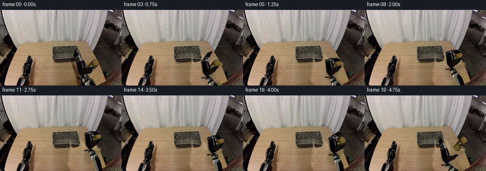
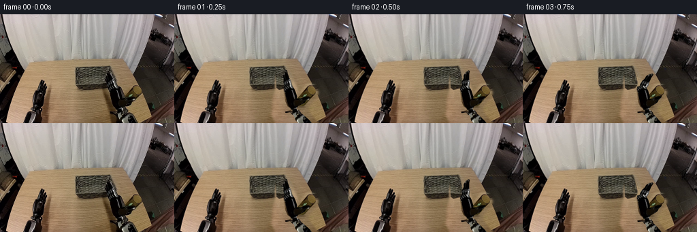
展开代码变化
--- 上一保存版本
+++ 本次保存版本
@@ -22,13 +22,14 @@
yy,xx=np.mgrid[:H,:W]
wood=source.copy()
for y in range(75,H):
- for x in range(146,221):
+ for x in range(140,223):
sx=x-67
if y<115 and sx>106: sx-=24
wood[y,x]=source[y,sx]
-remove=[(155,81),(161,81),(166,91),(176,101),(179,115),(195,103),
- (202,102),(209,108),(210,117),(199,134),(199,143),(209,157),
- (211,160),(152,160),(152,145),(155,127),(153,111),(151,95)]
+remove=[(153,80),(162,80),(169,91),(178,102),(183,116),(194,102),
+ (203,101),(211,107),(212,117),(204,127),(198,136),(198,143),
+ (210,158),(214,160),(148,160),(143,148),(144,126),
+ (148,112),(148,99),(150,90)]
rem=polygon_mask(remove,soft=1.4).resize((W,H),Image.Resampling.LANCZOS)
bg=Image.composite(Image.fromarray(wood),original,rem)
# Rebuild the narrow basket edge hidden by the initial open right fingers.
@@ -71,22 +72,25 @@
glass_arr=source.copy()
base=np.array([185.0,129.0]); top=np.array([201.0,111.0]); axis=top-base
perp=np.array([.747,.664])
-for y in range(118,137):
- for x in range(175,201):
+for y in range(112,137):
+ for x in range(175,210):
t=np.dot(np.array([x,y])-base,axis)/np.dot(axis,axis)
u=np.dot(np.array([x,y])-base,perp)
- if -.15<t<.65 and abs(u)<7:
- shade=np.clip(.55+.38*(1-(u/7)**2),.35,1)
- val=np.array([113,97,43])*shade
- # a subtle, stable highlight on the brown transparent wall
- val += np.array([26,28,20])*math.exp(-((u+3.3)/1.0)**2)
- glass_arr[y,x]=np.clip(val,0,255)
+ if -.25<t<.60 and abs(u)<9:
+ # Continue the visible amber wall down its rigid cylinder axis.
+ shade=np.clip(.38+.47*(1-(u/8)**2),.28,1)
+ val=np.array([116,98,40])*shade
+ val += np.array([21,22,14])*math.exp(-((u+3.3)/1.2)**2)
+ val += np.array([2.,1.7,.8])*math.sin(y*2.1+x*.43)
+ # Photographed upper wall meets the reconstruction without a seam.
+ mix=np.clip((t-.28)/.25,0,1)
+ glass_arr[y,x]=np.clip(val*(1-mix)+source[y,x]*mix,0,255)
glass_poly=[(195.4,106),(198.4,103.9),(201.7,104.1),(205.3,107.2),
(208,111.5),(207.8,115.3),(205.7,118.1),(191.6,133.4),
(188.4,135),(184.3,134),(180,130.5),(178.4,126.2)]
visible=[(195.2,106.1),(198.4,104),(201.6,104),(205.3,107.2),
- (208,111.5),(207.8,115.2),(205.5,118.1),(196,125.4),
- (192,122.7),(187.5,122.3),(184,122),(181.8,121.5)]
+ (208,111.5),(207.8,115.2),(205.5,118.1),(198.5,121.2),
+ (194,120.7),(189,121.5),(185.5,121.1),(183.1,120)]
v=np.asarray(polygon_mask(visible,soft=.15).resize((W,H),Image.Resampling.LANCZOS))/255.
glass_arr=(glass_arr*(1-v[...,None])+source*v[...,None]).astype(np.uint8)
glass=Image.fromarray(glass_arr).resize((W*S,H*S),Image.Resampling.LANCZOS).convert('RGBA')
@@ -165,11 +169,15 @@
# Soft contact shadow remains on the tabletop and fades as the object rises.
sm=Image.new('RGBA',(W*S,H*S),(0,0,0,0))
sd=ImageDraw.Draw(sm)
- a=round(62*(1-.68*min(1,max(0,lift/18))))
- sx=184+dx;sy=132+dy+lift*.72
- sd.ellipse(((sx-8)*S,(sy-3)*S,(sx+8)*S,(sy+4)*S),fill=(41,31,13,a))
+ a=round(88*(1-.68*min(1,max(0,lift/18))))
+ sx=185+dx;sy=135+dy+lift*.72
+ sd.ellipse(((sx-8)*S,(sy-2)*S,(sx+8)*S,(sy+3)*S),fill=(41,31,13,a))
sm=sm.filter(ImageFilter.GaussianBlur((1.5+lift*.035)*S))
canvas.alpha_composite(sm)
+ if lift<2:
+ contact=Image.new('RGBA',canvas.size,(0,0,0,0))
+ ImageDraw.Draw(contact).ellipse(((sx-6)*S,(sy-1.5)*S,(sx+5)*S,(sy+.4)*S),fill=(33,25,10,75))
+ canvas.alpha_composite(contact.filter(ImageFilter.GaussianBlur(.5*S)))
def frame_at(k):
dx,dy,angle,flex,tflex,gx,gy=k
候选 03播放与检查图
点击播放 · 原生 RGB 像素
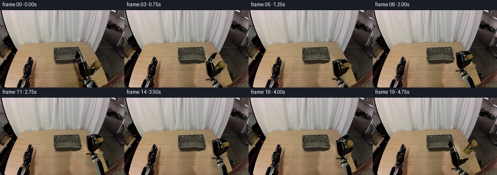
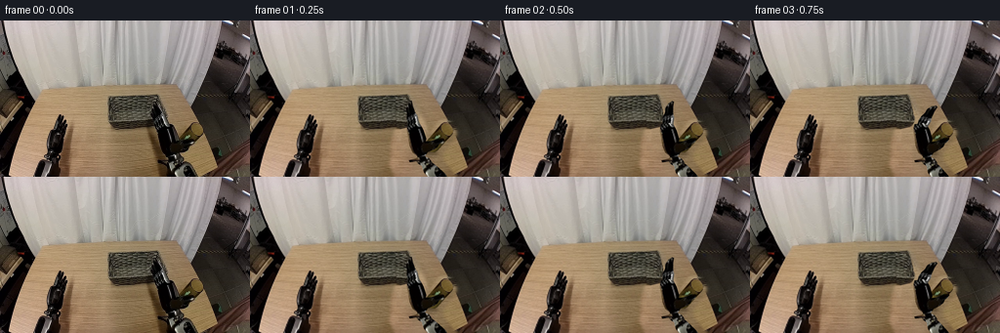
展开代码变化
--- 上一保存版本
+++ 本次保存版本
@@ -32,6 +32,10 @@
(148,112),(148,99),(150,90)]
rem=polygon_mask(remove,soft=1.4).resize((W,H),Image.Resampling.LANCZOS)
bg=Image.composite(Image.fromarray(wood),original,rem)
+# The table reconstruction must never cut into the visible woven container.
+protected_basket=polygon_mask([(110.5,78),(154.5,77),(154.5,111),
+ (118,113),(111,106)],soft=.12).resize((W,H),Image.Resampling.LANCZOS)
+bg=Image.composite(original,bg,protected_basket)
# Rebuild the narrow basket edge hidden by the initial open right fingers.
bask=np.asarray(bg).copy()
for y in range(77,113):
可观测工具轨迹
实际执行的命令与返回图片。
命令 1exit 0
/bin/bash -lc "ls -la && cat prompt.txt && printf '\\n--- RULES ---\\n' && cat GENERATION_RULES.md"
命令 2exit 0
/bin/bash -lc "cat task_spec.json && cat artifact_io.py && python - <<'PY'
from PIL import Image
im=Image.open('first_frame.png'); print(im.size)
im.resize((1024,640)).save('.tmp/first_large.png')
PY"命令 3exit 0
/bin/bash -lc "python - <<'PY'
from PIL import Image
im=Image.open('first_frame.png')
im.crop((140,70,223,160)).resize((664,720)).save('.tmp/right.png')
PY"命令 4exit 0
/bin/bash -lc "python - <<'PY'
from PIL import Image,ImageDraw
im=Image.open('first_frame.png').resize((1024,640))
d=ImageDraw.Draw(im)
for x in range(140,221,5):
d.line((x*4,75*4,x*4,640),fill=(255,40,40),width=1);d.text((x*4,290),str(x),fill=(255,0,0))
for y in range(80,161,5):
d.line((560,y*4,880,y*4),fill=(255,40,40),width=1);d.text((880,y*4),str(y),fill=(255,0,0))
im.save('.tmp/grid.png')
PY"命令 5exit 0
/bin/bash -lc "python - <<'PY' import importlib.util for m in ['cv2','scipy','numpy','PIL']: print(m,bool(importlib.util.find_spec(m))) PY"
命令 6exit 0
/bin/bash -lc "cat > generate.py <<'PY'
from pathlib import Path
import math
import numpy as np
from PIL import Image, ImageDraw, ImageFilter
import artifact_io
ROOT = Path(__file__).resolve().parent
W,H=256,160
S=4
original=Image.open(ROOT/'first_frame.png').convert('RGB')
source=np.asarray(original).copy()
def polygon_mask(points, size=(W,H), soft=.18):
im=Image.new('L',(size[0]*S,size[1]*S),0)
ImageDraw.Draw(im).polygon([(round(x*S),round(y*S)) for x,y in points],fill=255)
if soft: im=im.filter(ImageFilter.GaussianBlur(soft*S))
return im
# Geometry labels are constructed here from the supplied RGB photograph only.
# Recover the table's stationary grain from neighboring unobstructed wood.
yy,xx=np.mgrid[:H,:W]
wood=source.copy()
for y in range(75,H):
for x in range(146,221):
sx=x-67
if y<115 and sx>106: sx-=24
wood[y,x]=source[y,sx]
remove=[(155,81),(161,81),(166,91),(176,101),(179,115),(195,103),
(202,102),(209,108),(210,117),(199,134),(199,143),(209,157),
(211,160),(152,160),(152,145),(155,127),(153,111),(151,95)]
rem=polygon_mask(remove,soft=1.4).resize((W,H),Image.Resampling.LANCZOS)
bg=Image.composite(Image.fromarray(wood),original,rem)
# Rebuild the narrow basket edge hidden by the initial open right fingers.
bask=np.asarray(bg).copy()
for y in range(77,113):
for x in range(149,173):
# mirrored edge follows the original trapezoidal perspective
sx=int(round(278-x+(y-91)*.08))
sx=max(108,min(137,sx))
bask[y,x]=source[y,sx]
basket_mask=polygon_mask([(149,79),(162,77.5),(164,83),(166,90),(169,101),(167,108),(154,111),(150,108)],soft=.35).resize((W,H),Image.Resampling.LANCZOS)
bg=Image.composite(Image.fromarray(bask),bg,basket_mask)
# Preserve exact photographed textures on the rigid palm and metal jaws.
palm_poly=[(160,106),(169,104.5),(173,106.5),(176,112),(179,121),
(178,125),(182,129),(181,134),(177.5,139),(182,141),
(185,145),(181,149),(175,149),(170,146),(169,144),
(162,145),(161,143),(169,141),(170,139),(165,135),
(162,128),(160.5,119),(159,112)]
finger_poly=[(155.5,87),(157.7,83),(159.5,82.5),(160.9,86.5),
(162.5,89.5),(164.7,93.4),(166.2,95.2),(167.7,96.5),
(170.3,102.6),(172.2,105.6),(170.7,109.3),
(163.4,111),(159.5,106.3),(157.7,101.5),(157.2,97),
(155.2,93)]
thumb_poly=[(173.1,125.6),(178,123.7),(182.4,123.8),(187.7,122.4),
(191.7,121),(196,120.7),(197.7,122.3),(195.5,125.3),
(192.5,126.7),(190.6,130),(186.5,132.4),(181.5,134.5),
(175,133.6),(173,131)]
def sprite(poly):
im=original.resize((W*S,H*S),Image.Resampling.LANCZOS).convert('RGBA')
im.putalpha(polygon_mask(poly))
return im
palm=sprite(palm_poly)
fingers=sprite(finger_poly)
thumb=sprite(thumb_poly)
# Complete only the hidden portion of the cylinder, keeping all visible
# amber surface, rim and specular reflections from the given image.
glass_arr=source.copy()
base=np.array([185.0,129.0]); top=np.array([201.0,111.0]); axis=top-base
perp=np.array([.747,.664])
for y in range(118,137):
for x in range(175,201):
t=np.dot(np.array([x,y])-base,axis)/np.dot(axis,axis)
u=np.dot(np.array([x,y])-base,perp)
if -.15<t<.65 and abs(u)<7:
shade=np.clip(.55+.38*(1-(u/7)**2),.35,1)
val=np.array([113,97,43])*shade
# a subtle, stable highlight on the brown transparent wall
val += np.array([26,28,20])*math.exp(-((u+3.3)/1.0)**2)
glass_arr[y,x]=np.clip(val,0,255)
glass_poly=[(195.4,106),(198.4,103.9),(201.7,104.1),(205.3,107.2),
(208,111.5),(207.8,115.3),(205.7,118.1),(191.6,133.4),
(188.4,135),(184.3,134),(180,130.5),(178.4,126.2)]
visible=[(195.2,106.1),(198.4,104),(201.6,104),(205.3,107.2),
(208,111.5),(207.8,115.2),(205.5,118.1),(196,125.4),
(192,122.7),(187.5,122.3),(184,122),(181.8,121.5)]
v=np.asarray(polygon_mask(visible,soft=.15).resize((W,H),Image.Resampling.LANCZOS))/255.
glass_arr=(glass_arr*(1-v[...,None])+source*v[...,None]).astype(np.uint8)
glass=Image.fromarray(glass_arr).resize((W*S,H*S),Image.Resampling.LANCZOS).convert('RGBA')
glass.putalpha(polygon_mask(glass_poly,soft=.2))
# A rigid photographed forearm. Its nonvisible continuation has matching
# metal cross-section; two constant-length links are solved analytically.
wrist=np.array([179.,143.])
elbow0=wrist+np.array([28.,41.])/np.linalg.norm([28.,41.])*50
shoulder=np.array([246.,180.])
L1=50.; L2=np.linalg.norm(elbow0-shoulder)
fore=np.zeros((214,W,3),dtype=np.uint8)
fore[:H]=source
vaxis=(elbow0-wrist)/L1
nv=np.array([-vaxis[1],vaxis[0]])
for y in range(H,214):
for x in range(150,238):
q=np.array([x,y])-wrist
u=float(q@nv)
# actual sample across the visible lower casing (at y=155)
p=wrist+vaxis*16+nv*u
sx=int(np.clip(round(p[0]),0,W-1));sy=int(np.clip(round(p[1]),148,159))
fore[y,x]=source[sy,sx]
fore_poly=[(176.3,145.1),(181.1,143.5),(187.2,146.4),(191.4,150),
(199.5,156.8),(205,166),(214.7,184.1),(210.7,190),
(202.5,189.5),(197.2,182.8),(188.6,167),(177,155.5),(175,150)]
forearm=Image.fromarray(fore).resize((W*S,214*S),Image.Resampling.LANCZOS).convert('RGBA')
forearm.putalpha(polygon_mask(fore_poly,size=(W,214),soft=.17))
def rotation(angle):
a=math.radians(angle); return np.array([[math.cos(a),-math.sin(a)],[math.sin(a),math.cos(a)]])
def joint_matrix(pivot,angle):
R=rotation(angle);p=np.array(pivot);return R,p-R@p
def transformed(im,R,b):
inv=np.linalg.inv(R);c=-inv@b*S
coeff=(inv[0,0],inv[0,1],c[0],inv[1,0],inv[1,1],c[1])
return im.transform((W*S,H*S),Image.Transform.AFFINE,coeff,Image.Resampling.BICUBIC)
def compose(R,b,R2,b2):return R@R2,R@b2+b
def elbow_for(w):
dvec=shoulder-w;dist=np.linalg.norm(dvec);e=dvec/dist
a=(L1*L1-L2*L2+dist*dist)/(2*dist)
h=math.sqrt(max(0,L1*L1-a*a))
return w+a*e+h*np.array([-e[1],e[0]])
# Each keyframe is (wrist translation x/y, palm rotation, jaw flex, thumb flex,
# cylinder translation x/y). The cylinder only moves while pinched.
keys=[
(0,0,0,0,0,0,0),
(1.4,0,0,10,-2,0,0),
(4,0.4,1,29,-5,0,0),
(7,0.7,2,53,-8,0,0),
(10,0.3,3,78,-11,0,0),
(11,0,4,101,-13,0,0),
(11,-4,4,101,-13,0,-4),
(10,-10,4,101,-13,-1,-10),
(9,-17,4,101,-13,-2,-17),
(10,-22,4,101,-13,-1,-22),
(13,-25,4,101,-13,2,-25),
(16,-26,4,101,-13,5,-26),
(18,-24,4,101,-13,7,-24),
(19,-20,4,101,-13,8,-20),
(19,-17,4,101,-13,8,-17),
(19,-17,4,101,-13,8,-17),
(19,-17,3,73,-5,8,-17),
(15,-8,2,40,0,8,-17),
(7,2,1,12,0,8,-17),
(0,4,0,0,0,8,-17)]
bg_hi=bg.resize((W*S,H*S),Image.Resampling.LANCZOS).convert('RGBA')
def shadow(canvas,dx,dy,lift):
# Soft contact shadow remains on the tabletop and fades as the object rises.
sm=Image.new('RGBA',(W*S,H*S),(0,0,0,0))
sd=ImageDraw.Draw(sm)
a=round(62*(1-.68*min(1,max(0,lift/18))))
sx=184+dx;sy=132+dy+lift*.72
sd.ellipse(((sx-8)*S,(sy-3)*S,(sx+8)*S,(sy+4)*S),fill=(41,31,13,a))
sm=sm.filter(ImageFilter.GaussianBlur((1.5+lift*.035)*S))
canvas.alpha_composite(sm)
def frame_at(k):
dx,dy,angle,flex,tflex,gx,gy=k
can=bg_hi.copy()
lift=max(0,-gy-(-17 if gx>=7 else 0))
shadow(can,gx,gy,lift)
# The hand casts a broad, faint moving shadow on the wooden tabletop.
# Keep the shadow below the arm rather than attached to the background.
handshadow=Image.new('RGBA',can.size,(0,0,0,0))
hs=ImageDraw.Draw(handshadow)
hs.ellipse(((160+dx)*S,(122+dy*.3)*S,(185+dx)*S,(152+dy*.3)*S),fill=(31,24,13,34))
can.alpha_composite(handshadow.filter(ImageFilter.GaussianBlur(3*S)))
can.alpha_composite(transformed(glass,np.eye(2),np.array([gx,gy])))
wr=wrist+np.array([dx,dy]);el=elbow_for(wr)
oldang=math.atan2(vaxis[1],vaxis[0]);newang=math.atan2(*(el-wr)[::-1])
Rf=rotation(math.degrees(newang-oldang));bf=wr-Rf@wrist
can.alpha_composite(transformed(forearm,Rf,bf))
R=rotation(angle);b=wr-R@wrist
# Moving fingers rotate at a fixed knuckle pivot, never deforming the links.
Rj,bj=joint_matrix((166.5,108.8),flex)
Rdig,bdig=compose(R,b,Rj,bj)
can.alpha_composite(transformed(fingers,Rdig,bdig))
can.alpha_composite(transformed(palm,R,b))
Rt,bt=joint_matrix((176.5,130.5),tflex)
Rt,bt=compose(R,b,Rt,bt)
can.alpha_composite(transformed(thumb,Rt,bt))
return np.asarray(can.convert('RGB').resize((W,H),Image.Resampling.LANCZOS))
frames=np.stack([source]+[frame_at(k) for k in keys[1:]])
artifact_io.save(frames.astype(np.uint8),ROOT)
# Intermediate contact sheet for visual review.
preview=Image.new('RGB',(W*5,H*4))
for i,f in enumerate(frames):preview.paste(Image.fromarray(f),((i%5)*W,(i//5)*H))
preview.save(ROOT/'.tmp'/'all_frames.png')
PY
python generate.py"命令 7exit 0
/bin/bash -lc "python - <<'PY'
from PIL import Image
for i in [1,5,10,15,19]:
im=Image.open(f'frames/{i:02d}.png')
im.resize((1024,640)).save(f'.tmp/f{i}.png')
PY"命令 8exit 0
/bin/bash -lc "python - <<'PY'
from PIL import Image
im=Image.open('first_frame.png')
im.crop((174,101,211,138)).resize((592,592),Image.Resampling.NEAREST).save('.tmp/glasspixels.png')
PY"命令 9exit 0
/bin/bash -lc "python generate.py && python - <<'PY'
from PIL import Image
Image.open('frames/19.png').resize((1024,640)).save('.tmp/final_large.png')
PY"命令 10exit 0
/bin/bash -lc "python generate.py && python - <<'PY'
import numpy as np
from PIL import Image
from pathlib import Path
frames=np.stack([np.array(Image.open(p).convert('RGB')) for p in sorted(Path('frames').glob('*.png'))])
assert frames.shape==(20,160,256,3)
assert frames.dtype==np.uint8
assert np.array_equal(frames[0],np.array(Image.open('first_frame.png').convert('RGB')))
print('Verified: 20 RGB frames, 256x160, exact original frame 00.')
print('Output: pixels.npz, index.html, frames/; reproducible with generate.py')
PY"视觉工具实际返回图片 1
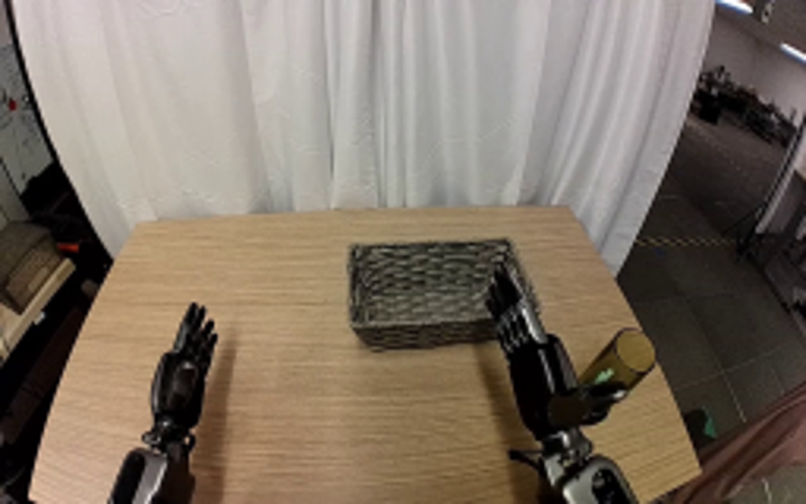
视觉工具实际返回图片 2
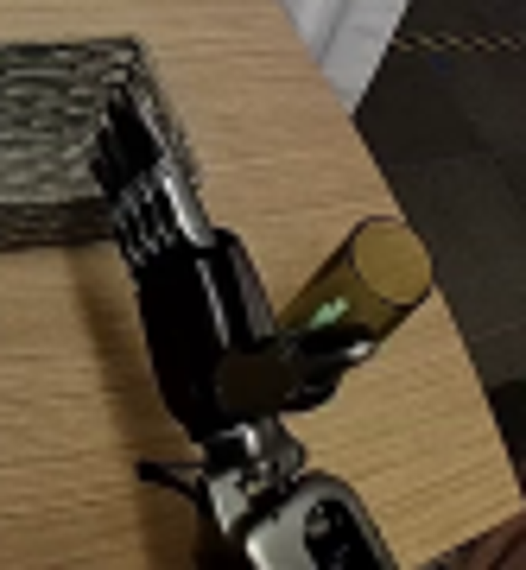
视觉工具实际返回图片 3
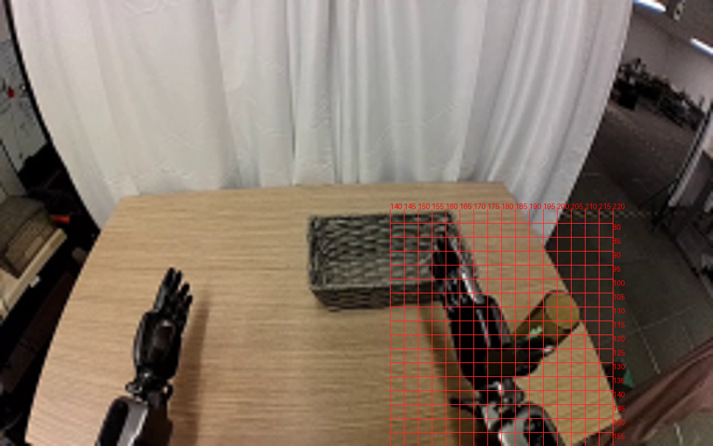
视觉工具实际返回图片 4
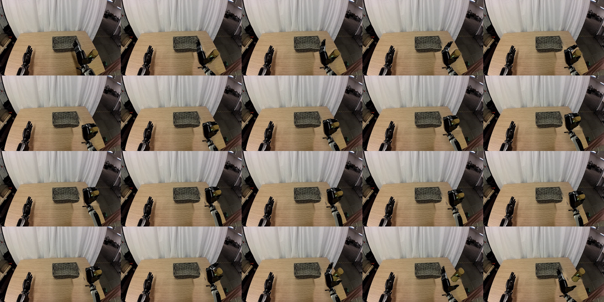
视觉工具实际返回图片 5
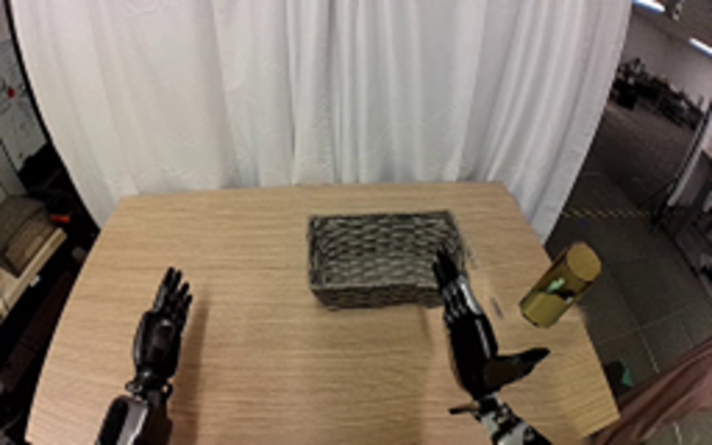
视觉工具实际返回图片 6
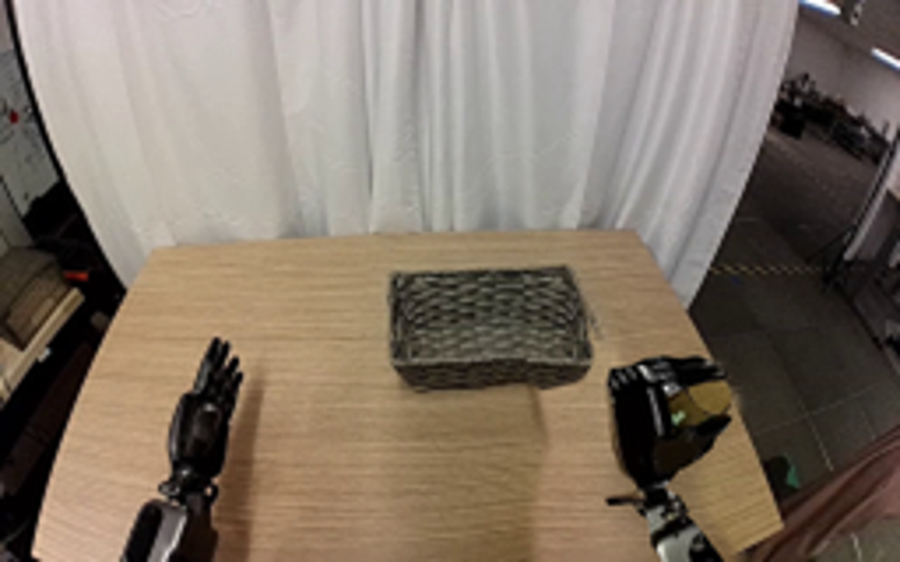
视觉工具实际返回图片 7
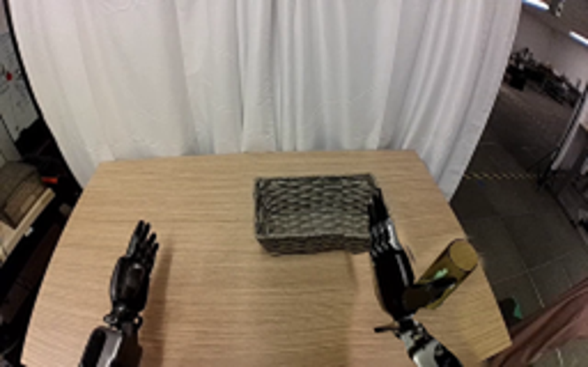
视觉工具实际返回图片 8
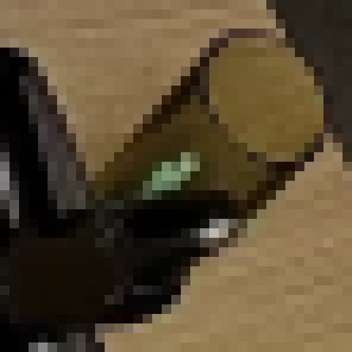
视觉工具实际返回图片 9
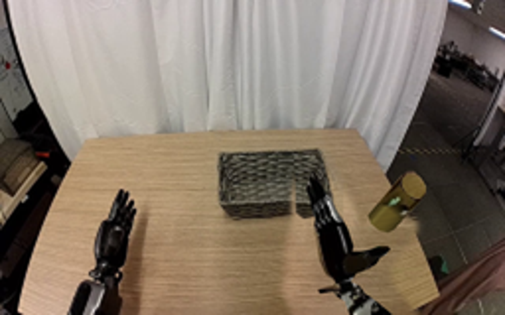
保存候选 3 份；完成命令 10 次；可验证图片返回 9 张。原始 API 响应与完整日志保留在本地。